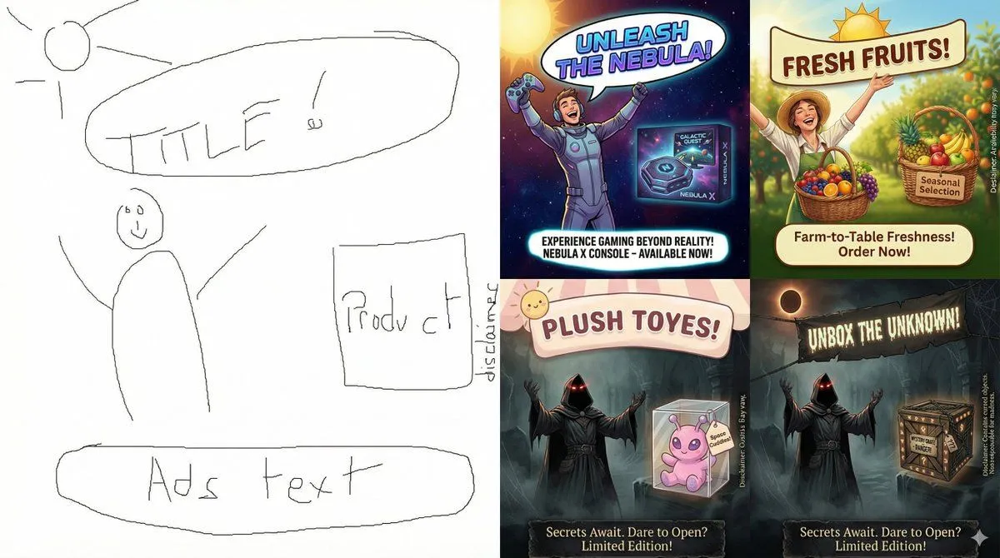

Using sketches as strict layouts in Nano Banana Pro
Originally posted on LinkedIn, December 15, 2025.
Nano Banana Pro can take a hand-drawn sketch or design frame and create a professional version that preserves the original structure. It treats the sketch as a binding specification, not a hint. This is episode #9 in my series on learning to use Nano Banana Pro.
Designers can control the exact position of every text element, object, and image without touching graphics software. The model fills the frame with professional, accurate content.
For example, use this prompt:
Create a complete product ad based on the attached sketch, and keep every element in exactly the same position shown in the sketch.
Paste the prompt into gemini.google.com and remember to click the banana icon. In this example, the model turned the attached sketch into a finished product ad while keeping the specified layout.
